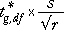
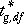
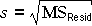

Multiple comparisons in randomised block designs
A similar adjustment can be made to help assess which treatments differ in a randomised block design.
If there are g treatments and r observations for each treatment (so the total sample size is n = rg), the overall probability is exactly 95% that all pairwise differences between the treatment means are less than

if the factor has no effect on the response. In this formula,  is a constant that can be looked up in tables of the studentised range distribution or obtained from statistical software, s is the best estimate of the error standard deviation,

and the residual sum of squares has df degrees of freedom.
Any treatment means that
differ by more than this provide evidence that the underlying level
means are different.
Codeine and acupuncture for dental pain relief
The diagram below shows the pain relief score in an experiment with 32 subjects who were each given one of four treatments (combinations of codeine and acupuncture) to help relieve dental pain. They were grouped into blocks of four according to an initial assessment of their pain tolerance and the treatments were randomly allocated to the four subjects in each block. (I.e. a randomised block design was used.)
The diagram initially shows a band (red) whose width should cover all treatment means with probability 95%, if we ignore the blocks that were used in the experiment (groups of patients with similar prior assessment of pain tolerance). Drag the red band and observe that:
However this analysis is wrong since the experiment was a randomised block experiment. Select Correct analysis taking account of blocks from the pop-up menu. After taking account of differences between the blocks, the residual unexplained variation (and hence the mean residual sum of squares, s) is much lower, so the red band that should cover all treatment means with probability 95% is now much narrower. Drag the band and observe that:
There is no evidence of a difference between Acupuncture and Codeine on their own, but strong evidence that all other pairs of treatments have different mean pain relief scores.